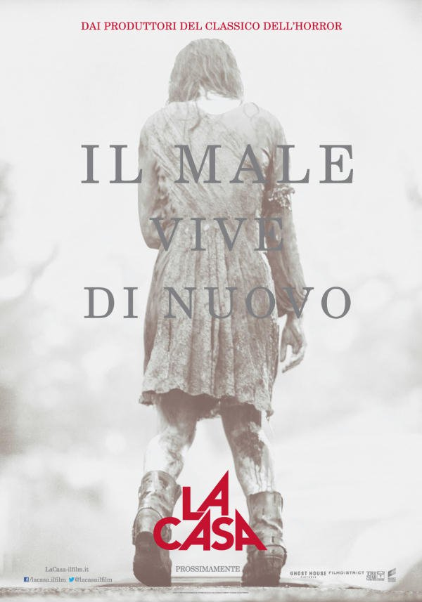
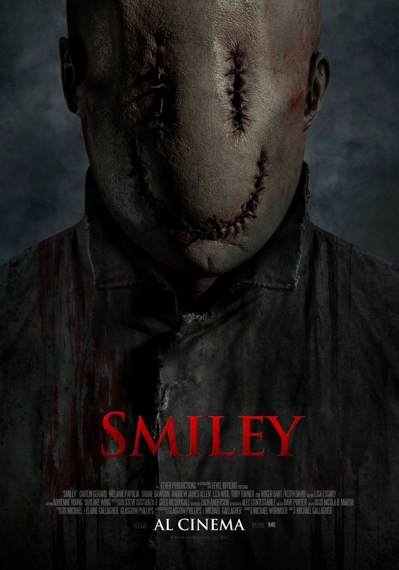

Sicuramente uno dei migliori film horror degli ultimi anni (dato anche il basso livello ormai dei film di questa categoria). Trama interessante, non delle migliori ma ti fa comunque
venir voglia di guardare il film fino alla fine. Non il solito horror moderno basato semplicemente sui jumpscare, anzi. Questo film vuole
mettere allo spettatore un'ansia perenne, e in effetti ci riesce. Un'ansia che lo accompagna per tutto il film, e non solo in alcuni momenti, soprattutto grazie all'inquietudine
trasmessa dal personaggio del Babadook. Neanche lui graficamente è uno dei migliori mai visti, ma è la sua voce a trasmettere quell'inquietudine pazzesca
che accompagna lo spettatore per tutto il film. Prova di recitazione degli attori più che sufficiente, fotografia non delle migliori. Verdetto finale per questo film?
GUARDO
Un esempio di bella idea sviluppata molto male. Il film è banale, scontato e pieno di dialoghi inutili e insensati. Insensate sono anche le azioni
dei protagonisti che sembrano fare di tutto per non capire cosa sta accadendo e rischiare la vita. Il film non fa paura, tutto è prevedibile. La recitazione
dei protagonisti è veramente pessima e poco credibile. Ma il tutto è poco credibile quando i personaggi compiono certe azioni insensate. Neanche gli effetti speciali
sono un granchè e il Midnight Man, che dovrebbe essere la cosa più terrorizzante del film, è stato trattato esattamente come gli effetti speciali, ovvero in maniera pietosa.
Non si salva neanche la fotografia perchè il film si svolge interamente al buio in pratica e questo causa un senso di fastidio anche nello spettatore che non
riesce a vedere nulla con chiarezza. Non funziona nulla. Non buttate tempo. Verdetto per questo film?
PASSO

Per chi ama i film horror potrebbe lo definirei tranquillamente un classico. Se un gruppo di amici decide di andare in una casa isolata per divertirsi,
qualcosa di brutto dovrà accadere per forza. I ragazzi scopriranno che in quella zona succedono cose strane.
La situazione diventerà terrificante, con sangue, gente impossessata, fughe e nascondigli. I giovani dovranno cercare di sopravvivere all'amica che viene
impossessata da un demone, quest'ultimo era nascosto nella cantina della casa che la ragazza aveva aperto precedentemente. Tutto ciò porterà a una
situazione terrificante. Ottimo il trucco, davvero spaventosa sia la protagonista che gli effetti speciali, come quelli con cui sono fatte le scene
di sangue o con cui è fatto il demone stesso. Un horror/splatter da guardare per gli
amanti del genere. Verdetto per questo film?
GUARDO

Un film che parte con una leggenda metropolitana: se scrivi tre volte la frase "I did it for the lulz" a qualcuno, appare un killer che lo uccide. Idea innovativa
e anche ben sviluppata. Innovativa perchè sfrutta molto la tecnologia e la rete per mandare avanti questo film. Il personaggio del killer, Smiley, è veramente inquietante
e brutale quando uccide. La protagonista della storia però ci confonderà: nel film non si riesce a capire se questo Smiley sia reale o meno, se si tratti
tutto di uno scherzo fatto alla protagonista, di sue allucinazioni o se il killer esiste davvero. Questo dubbio sarà ciò che caratterizzerà il film e porterà lo spettatore
ad avere ancora più dubbi e paura su ciò che accade. La particolare maschera che caratterizza il killer ha reso questo film ancor più particolare. Verdetto
per questo film?
GUARDO
Personalmente l'argomento Chernobyl mi ha sempre affascinato e l'ho sempre sognato in un horror ben fatto, ma purtroppo non è questo il caso. L'ambientazione è
quella di Chernobyl, fantastica, ambiente distrutto e quasi post apocalittico, nessuna persona per colpa delle radiazioni e tutto ciò che di inquietante
può esserci nella reale situazione di Chernobyl. Il film però non decolla mai. Succedono cose, si intravedono "mostri" o persone mutate, muore gente. Il tutto però
è molto confusionario e portato avanti troppo velocemente e troppo male. Il film è una fuga continua dei protagonisti da suoni e rumori, perchè i mutanti si intravedono
poco e nulla. Film assolutamente non all'altezza delle aspettative e bellissima ambientazione sprecata, insieme a un contesto reale e spaventoso che poteva
fare molta più paura, specialmente conoscendo la realtà dei fatti. Verdetto per questo film?
PASSO